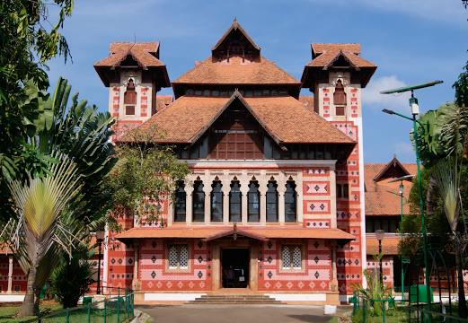

Thiruvananthapuram
Thiruvananthapuram (or Trivandrum) is the capital of the southern Indian state of Kerala. It's distinguished by its British colonial architecture and many art galleries. It’s also home to Kuthira Malika (or Puthen Malika) Palace, adorned with carved horses and displaying collections related to the Travancore royal family, whose regional capital was here from the 18th–20th centuries.
Places of Interest
1.Napier Museum

Named after Lord Napier, this art and history museum was established in 1855. An exemplary example of gothic architecture-style, Napier Museum boasts greatly of its natural air conditioning system. It houses an exceptional collection of ornaments, bronze idols, chariots, and ivory carvings. The museum offers insight into the rich and glorious culture and history of Kerala. The great contribution made by Rajput, Mughal, and Tanjore schools of art along with the skillful work by several Chinese, Japanese, and Tibetan artists can be found in here. The Japanese leather figures depicting the epics of Mahabharata and Ramayana catch the eyes of tourists. Napier Museum is certainly one of the most visited tourist places in Trivandrum. Situated in the Museum compound, the ground floor of this place houses India’s oldest zoological garden. Another important feature is Sree Chithra Art Gallery, established by Maharaja Chithira Thirunalin in 1935. The gallery contains epic works from much famed Raja Ravi Varma and Nicholas Roerich. Amid a well-laid-out garden, the zoological park houses a lake and boat club. The park offers an excellent day outing for children and adults alike. It boasts of 75 different species of animals and birds from India, Ethiopia, and Australia. It is also home to the Lion-tailed Macaque, Nilgiri Tahr, Manipur deer, Indian Rhino, Nilgiri Langur, Asiatic Lion and the Royal Bengal Tiger. There is prominent fauna found here along with habitats of giraffe, hippopotamus, zebra, and Cape buffalo.
2.Padmanabhaswamy Temple

Dedicated to Lord Vishnu, Sree Padmanabhaswamy Temple is one of the famous places to visit. This holy shrine is one of the 108 abodes of Lord Vishnu. A large number of devotees throng the temple on multiple occasions. The place of worship has lent its names to the capital city as ‘Thiru’ ‘Anantha’ ‘Puram’, which means Sacred Abode of Lord Anantha Padmanabha. Dravidian style of architecture is prominent in this holy structure. The chief attraction is the deity of Padmanabhaswamy, enshrined in a reclining posture. However, the main deity remains that of Lord Vishnu and his heavenly consorts namely, Sridevi and Bhudevi. The sacred idol is covered with a special ayurveda mixture that helps in keeping the plaster intact and clean. Devotees donate a large sum of money and precious articles in this temple. The assets are believed to be value around 90,000 crores. The invaluable donations are kept safe in 6 different cellars. Padmanabhaswamy Temple should definitely be included in the itinerary of the places to visit in Trivandrum. Indeed, the temple remains impeccable in appearance and religious sentiments attached to it.
3.Thiruvananthapuram Zoo

Thiruvananthapuram Zoo, one of the oldest terrarium in the country which was established as a supplemental to the Napier Museum in the year 1857 by the former Maharaja of Travancore, which was originally opened for recreational purposes, the zoo becomes a conservation center of wildlife over a period of time. The zoo has a wide array of 35 species of animals, 28 species of birds and 17 kinds of reptiles. The zoo also houses botanical gardens with more than 200 species of trees, thousands of beautiful plants, orchids and snake farm. How to Reach: The zoo can be reached by any local transport due it's in city location. Timings: Opened daily from 9 AM to 5:15 PM. Price: Approximate price starts from 20 INR..
4.Shanghumukham Beach
Shanghumukham Beach is an ideal place for those seeking peace and serenity. Far from the hustle and bustle of the city, this place is known for breath-taking sunrises and sunsets; visit to this beach is one of the best things to do in Trivandrum The calm environs and exquisite shoreline here is undoubtedly commendable. The beach is also considered as the ‘Arattukadavu’ (Seat) of Sri Ananthapadmanabhan. Shamghumukham is also a prime location for the Ganesha Visarjan, where millions of Hindu devotees throng during the Vinayaka Chaturthi. The best time of the year to visit here is around the Arattu festival. The beach is swarmed with large processions, carrying the deities of Lord Padmanabhawamy, Lord Narasimha and Lord Krishna and led by the former Maharaja of Travancore. The Maharaja is escorted by members of the Royal family, temple authorities, armed guards, police, and officers. The ceremonial bath in this place marks the conclusion of the festival, after which the deities are taken back to their respective temples by the procession. Preferred due to its isolated location and picturesque landscape, Shanghumukham is the pride of Trivandrum. The famous sculpture of a Mermaid (Jalkanyka) carved by Raja Ravi Varma is an added delight. The sculpture is more than 35m long and is an exemplary piece of art. Visitors can expect comparatively quite evenings with impeccable sunsets. The breezy shorelines and excellent eating joints make this beach quite popular amongst the tourists. The Indian Coffee house, located across is the vantage point of witnessing beautiful sunset.